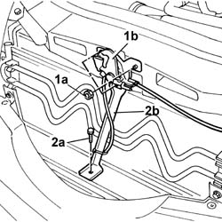
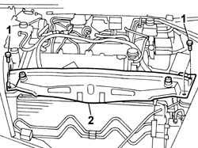
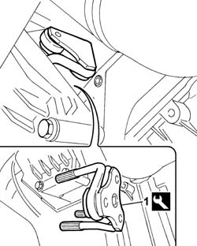
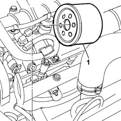

1084B30 CARTRIDGE ENGINE OIL FILTER -R.R.
- Path
- Procedures > 10 ENGINE > 1084 ENGINE LUBRICATION > 1084B ENGINE OIL LUBRICATION CIRCUIT > 1084B30 CARTRIDGE ENGINE OIL FILTER -R.R.
- Kind
- repair procedure (removal / refitting; the operation number is the code)
- Applies to
- engines: 2.4 JTD 20V; all production periods
- Interactive page
- https://sloeber94.github.io/elrnDB-lThss/en/#/850905
Applies to: engines: 2.4 JTD 20V; all production periods
 Removing
Removing
 Refitting
Refitting- Position the vehicle on a lift.
See in Op. 1016A10 SOUND-PROOFING COVER - R.R.
1. Undo the fixing nuts (1a) and remove the bonnet lock (1b) from the housing in the crossmember.
2. Undo the lower nut (2a) and remove the lock reinforcement bracket (2b).

Applies to: engines: 2.4 JTD 20V; all production periods
1. Undo the retaining bolts.
2. Remove the upper front crossmember.

Applies to: engines: 2.4 JTD 20V; all production periods
See in Op. 7055B54 PROTECTION/GUARD under engine - R.R.
1. Position the tool and secure to the cartridge oil filter.
 | Description | Code | Function |
|---|---|---|---|
1 | Self-locking key | 1.871.001.200 | Removing oil filter |

Applies to: engines: 2.4 JTD 20V; all production periods
- Turn until the engine oil filter is fully unscrewed.
1. Lower the vehicle and remove the cartridge oil filer from the upper part of the engine compartment.

Applies to: engines: 2.4 JTD 20V; all production periods
Refitting
Removing- Lubricate the seal with engine oil and fit the engine oil filter tightening it fully by hand.
- Raise the vehicle.
See in Op. 7055B54 PROTECTION/GUARD under engine - R.R.
- Lower the vehicle.
- Fit the upper front crossmember and tighten the fixing bolts to torque.
 | Value - daNm | Fastening | Component | Ø |
|---|---|---|---|---|
. | 0.6 | Bolts | FRONT WING CROSSMEMBER HEADLAMP HOUSINGS | M6 |
- Fit the bonnet lid lock complete with bracket and tighten the nuts fixing it to the upper crossmember and to the lower crossmember.
- Fill the engine lubrication system as described in the operation:
See in Op. 0010T11 ENGINE OIL - Check level and top up if necessary
See in Op. 1016A10 SOUND-PROOFING COVER - R.R.
- Remove the vehicle from the lift.
Topics linked from this page (3)
- 0010T11 ENGINE OIL - Check level and top up if necessary
- 1016A10 SOUND-PROOFING COVER - R.R.
- 7055B54 PROTECTION/GUARD under engine - R.R.